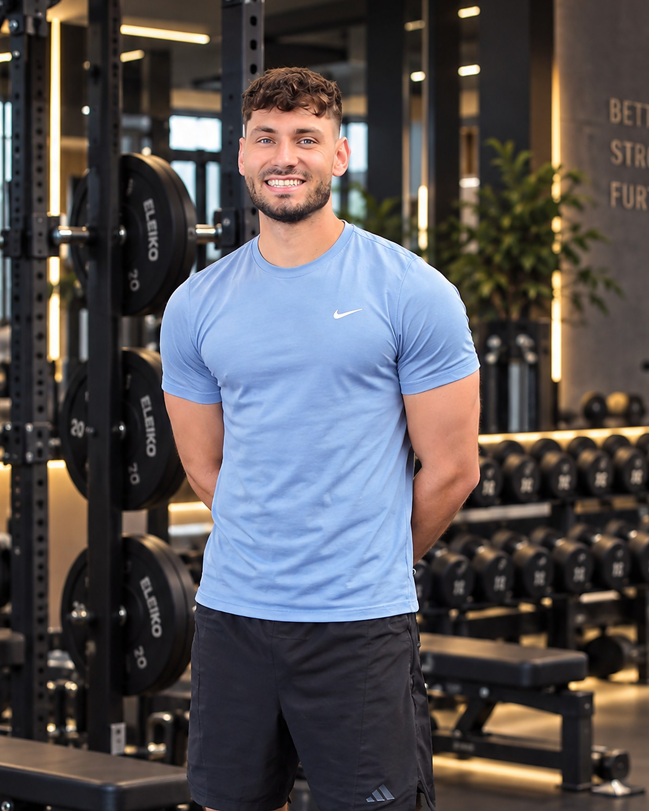

Fester 1:1 Live-Call
Jede Woche ein fester Termin mit mir. Wir besprechen die vergangenen Tage, analysieren deine Herausforderungen und deine Fortschritte und legen gemeinsam die nächsten Schritte fest.
1:1 Online Coaching · für vielbeschäftigte Menschen
Bereit, etwas zu verändern? Sehr gut. Denn gemeinsam bauen wir etwas auf, das auch in zwei Jahren noch steht — selbst in den Phasen, in denen alles drunter und drüber läuft.

Dabei helfe ich dir
Nicht die perfekte Woche. Sondern Veränderungen, die auch dann noch stehen, wenn das Coaching längst vorbei ist.
Kostenloses ErstgesprächDie körperlichen Ziele — erreicht über einen Weg, der sich in deine Woche einfügt statt sie zu sprengen.
Der Punkt, den die Waage nicht misst und der am Ende am meisten zählt.
Weg von Entweder-oder. Hin zu Entscheidungen, die du bewusst triffst statt sie zu erleiden.
Der eigentliche Kern der Arbeit: Systeme, die tragen, wenn die Motivation es nicht tut.
Ein klarer Kopf im Job — und abends noch genug übrig für Familie, Freunde oder das, was dir sonst wichtig ist.
Was du bekommst
Der fehlende „perfekte“ Plan ist selten das Problem. Das eigentliche Problem ist die stressige Woche, in der auf einmal alle Vorsätze scheitern, weil alles anders kommt. Genau dafür habe ich mein System konzipiert.
Jede Woche ein fester Termin mit mir. Wir besprechen die vergangenen Tage, analysieren deine Herausforderungen und deine Fortschritte und legen gemeinsam die nächsten Schritte fest.
Zwischen den Calls bin ich ansprechbar. Spontane Geschäftsreise, Restaurantkarte, eine Frage, die nicht bis zum nächsten Termin warten soll — schreib mir, du bekommst eine Antwort.
Keine Diät mit Enddatum, keine Verbotsliste. Ein System, das du verstehst und das mit Kantine, Kundenessen und Familie funktioniert.
Schritt für Schritt bauen wir Gewohnheiten auf, die sich irgendwann nicht mehr nach Disziplin anfühlen, sondern einfach dazugehören.
Wenn etwas klemmt, suchen wir die Ursache statt den Schuldigen. Und für Wochen, in denen nichts läuft, steht ein Minimum, das immer geht.
Wöchentliches Journaling und Fragebögen halten fest, wo du stehst. So siehst du Fortschritt auch dann, wenn es sich gerade nicht danach anfühlt.
Deine Vorteile
Wir bauen ein Konzept, das nicht nur zu deinem Ziel passt, sondern zu dem Alltag, den du wirklich hast.
Mit einem Coach an deiner Seite erreichst du dein Ziel schneller — ohne Umwege über das, was ohnehin nicht wirkt.
Über wenige gezielte Veränderungen erreichen wir dein Ziel so, dass es auch nach dem Coaching bestehen bleibt.
Jemand, der deine Situation kennt. Druck, Rückschläge und Stress sprichst du direkt an, statt sie allein zu tragen.
Der Weg
Keine feste Laufzeit, keine Programmschablone. Fortschritt entsteht nicht zufällig, sondern weil wir ihn in jeder Phase absichern.
Analyse statt Annahmen: Wo stehst du, wie sieht deine Woche wirklich aus, und woran ist es bisher gescheitert? Daraus entsteht eine Richtung, die zu deinem Alltag passt — nicht zu einem Idealbild.
Wenige Gewohnheiten, dafür verlässlich. Wir setzen die ersten Routinen auf, legen deine Mindeststandards fest und bringen dein Ernährungssystem in eine Form, die auch an vollen Tagen trägt.
Jetzt wird gesteigert. Im wöchentlichen Call analysieren wir, was der Alltag dazwischenfunkt, und lösen es konkret. Journaling und Check-ins zeigen dir schwarz auf weiß, dass sich etwas bewegt.
Die Routinen tragen sich selbst. Wir prüfen, was auch ohne Betreuung standhält, und arbeiten gezielt darauf hin, dass du irgendwann keinen Coach mehr brauchst.
Das Prinzip
Ein Jahr hat zwölf Monate. In ein paar davon kommt immer etwas dazwischen. Die Frage ist nur, was dann mit deinen Routinen passiert.
Die festgelegten Mindeststandards in unserer Zusammenarbeit sorgen dafür, dass deine nach und nach aufgebauten, guten Gewohnheiten und Routinen auch in den Phasen weiter am Leben bleiben, in denen du sonst erfahrungsgemäß alles wieder über Bord geworfen hättest.
Kundenstimmen
Heute — acht Monate später — bin ich 50 kg leichter und lebe ein komplett anderes Leben.
Eigentlich waren nur ein paar Monate geplant, aber es hat so viel Spaß gemacht, dass ich unbedingt weitermachen wollte! 💪
Aaron hat mir gezeigt, dass sich Spaß und Durchbeißen nicht ausschließen müssen.
Ich habe meine Ernährung komplett umgestellt, Fett abgenommen, Muskeln aufgebaut und bin körperlich wieder richtig fit geworden.
Alles in allem kann ich jedem nur wünschen und empfehlen, ein Kennenlerngespräch zu vereinbaren.
Aaron ist ein super Personal Trainer! Ich habe mit ihm abgenommen, neue Routinen entwickelt und fühle mich besser denn je. Ich bin ihm für alles sehr dankbar!
Die Unterstützung war in allen Bereichen super — egal ob beim Training, bei der Ernährung oder in Sachen Motivation.
Er hat es tatsächlich geschafft, aus mir Couch-Potato einen begeisterten Krafttraining-Fan zu machen.
Dein Coach
Großgeworden in verschiedenen Mannschaftssportarten, darunter Basketball bis in die Jugend-Bundesliga. Irgendwann kam das Krafttraining und das Bewusstsein für gesunde und performanceorientierte Ernährung dazu — und ist geblieben. Aus dem einstigen Ausgleich zum Alltag wurde eine Leidenschaft, die ich heute jeden Tag an meine Coaching-Klienten weitergeben darf :)
Nach dem Abitur habe ich mich in einem freiwilligen sozialen Jahr entschieden, Lehramt, u. a. auf Sport, zu studieren. Nach den ersten Semestern wurde mir allerdings ziemlich schnell klar: Die Arbeit im 1:1-Setting gibt mir deutlich mehr als in einer großen Gruppe — denn nur so kann ich sicherstellen, dass mein Gegenüber wirklich die Unterstützung bekommt, die er braucht und die zu ihm passt.
Deshalb arbeite ich heute ausschließlich 1:1 und online, mit Menschen, deren Woche ohnehin voll ist. Mein Job ist dabei weniger, dir 0815-Fitness-Tipps von der Stange vorzusetzen, als dafür zu sorgen, dass unser gemeinsam erarbeitetes System auch in der vollsten Woche trägt — und dein Fortschritt ebenso.
FAQ
Für Menschen mit vollem Kalender, die es allein schon mehrfach probiert haben — und denen nicht Wissen fehlt, sondern Struktur und jemand, der dranbleibt.
Genau dafür ist es gebaut. Wir planen nicht die Idealwoche, sondern deine echte — inklusive Reisen, Terminblöcken und Tagen, an denen alles kippt. Für die definieren wir Mindeststandards, damit die Kette nicht reißt.
Ja, wenn die Betreuung stimmt. Der feste Live-Call, die durchgehende Erreichbarkeit und die wöchentlichen Check-ins machen die Zusammenarbeit oft sogar verbindlicher — weil nichts nebenbei passiert, sondern alles einen festen Platz hat.
Größtenteils über meine Coaching-App: ein zentraler Ort für den Chat mit mir, Ernährungstracking mit KI-Fotofunktion, Videoaufnahmen zur Analyse deiner Übungsausführung, deine Pläne und die Check-ins. Die wöchentlichen Calls laufen ganz locker per WhatsApp-Videoanruf oder Zoom, und per WhatsApp bin ich zusätzlich für dich erreichbar.
Ein Plan weiß nicht, dass deine Woche gerade kippt. Im 1:1 Coaching gibt es jede Woche einen festen Live-Call, in dem wir analysieren, was dazwischenkam, und es konkret lösen. Dazu kommen Mindeststandards für schwierige Phasen und ein Coach, der zwischen den Terminen erreichbar ist.
Nein. Ich sitze in Asperg bei Ludwigsburg, das Coaching läuft aber komplett online und funktioniert damit von überall aus.
Nein. Wir arbeiten mit dem, was du ohnehin isst, und verändern wenige Dinge — dafür so, dass sie bleiben.
Es gibt keine feste Laufzeit. Wie lange wir zusammenarbeiten, hängt von deinem Ziel und deinem Tempo ab — das besprechen wir im Erstgespräch offen.
Das ist der eigentliche Maßstab. Ziel ist, dass du irgendwann ohne mich weitermachst — mit Routinen und einem Ernährungssystem, die dann längst deine sind.
Das hängt vom Umfang ab. Im kostenlosen Erstgespräch bekommst du eine klare Zahl — ohne Verkaufsdruck.
Kostenloses Erstgespräch
Erst mit deinem Klick wird der Kalender von Calendly geladen. Dabei werden deine IP-Adresse und Browserdaten an Calendly LLC in den USA übertragen. Mehr dazu in der Datenschutzerklärung.
Wir beide wissen, dass du längst spürst, dass es Zeit ist anzufangen.
Der erste Schritt ist ein lockeres Gespräch, fünfzehn bis dreißig Minuten. Ohne Kosten, ohne Verpflichtung — nur die Frage, ob das Coaching das Richtige für dich ist.
Und keine Sorge: Wenn es das aus meiner Sicht nicht ist, sage ich dir das offen.
one day…oderday one.
Wenn du bereit bist, deine Ziele endlich ein für alle Mal zu erreichen, trag dich für ein kostenloses Kennenlerngespräch ein. Wir schauen gemeinsam, wie ich dich am sinnvollsten unterstützen kann — ganz egal, auf welchem Level du gerade stehst.